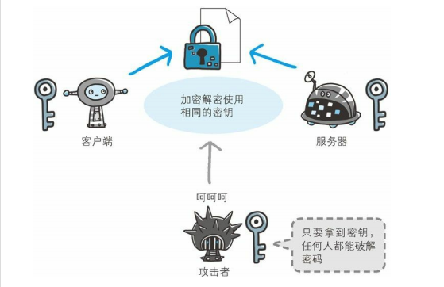
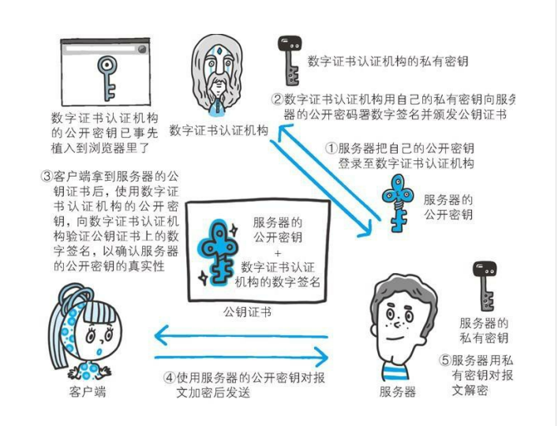
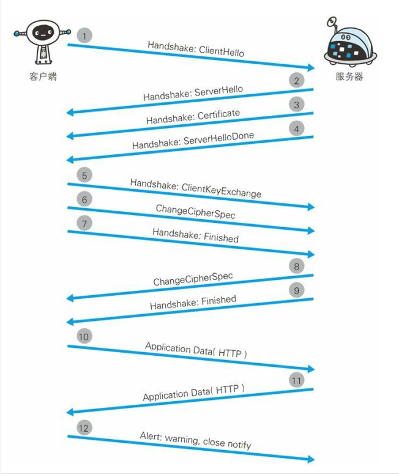
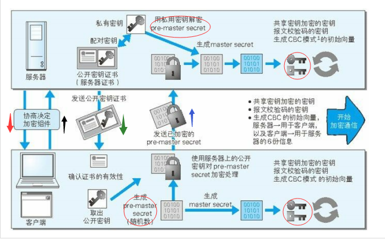

http图解系列2
看了《图解http》中的https协议，对https做一个总结，主要分为HTTPS的实质、HTTPS加密原理、HTTPS的通信过程等几个部分
https是什么，为什么会出现？
http存在的问题
http协议简单，这个优点也是其缺点，由于HTTP协议过于简单：
- 通信使用明文（不加密），内容可能会被窃听。
- 不验证通信方的身份，因此可能遭遇伪装
- 无法验证报文的完整性，所以有可能已遭篡改。
为了解决诸多问题，HTTPS应运而生。
https的实质
HTTP加上加密处理、认证机制、以及完整性保护后的就是HTTPS。
需要知道的是，HTTPS并非是应用层的一种新的协议。只是HTTP通信接口部分用SSL或TLS协议代替而已。也就是说，所谓的HTTPS，其实就是身披SSL协议外壳的HTTP。
SSL&TLS
HTTPS中使用了SSL和TLS这两个协议。
TLS以SSL3.0为基准，后又制定了TLS1.0、TLS1.1和TLS1.2。当前主流的版本是SSL3.0和TLS1.0。
TLS是以SSL为原型开发的协议，有时候会统称该协议为SSL。
hTTPS的加密原理
近代的加密算法中加密算法是公开的，而密钥是保密的。通过这种方式来保持加密方法的安全性。
加密和解密要用到密钥，如果没有密钥就没有办法对密码解密。换句话来说，任何人只要持有密钥就能够对密文进行解密。
HTTPS在加密过程中使用了非对称加密技术和对称加密技术。
对称加密算法
采用单钥密码系统的加密方式，同一个密钥可以同时做信息的加密和解密，这种加密的方法称为对称加密，也称为单密钥加密。像我们常见的base64加密就是赌城加密
下面会把对称加密算法称为共享密钥加密算法。
假如现在，SSL在通信过程中，使用了对称加密算法，也就是说客户端和服务器同时共享一个密钥。
于是，以共享密钥的方式加密，必须将密钥发给对方。这个时候，假如通信过程被监听，密钥被攻击者获取了，那么这个时候也就失去了加密的意义了。

那么，有没有办法解决这个问题呢？答案是肯定的，也就是使用两把密钥。
下面先看使用两把密钥的非对称加密算法。
非对称加密算法
与对称加密算法相反，非对称加密算法需要两个密钥来进行加密和解密，这两个密钥是配对的，分别是公开密钥（公钥）和私有密钥（私钥）。
一般情况下，公钥是可以被公开的，它主要用来加密明文。而相应的，私钥不能被公开，用来解密公钥加密的密文。
值得注意的是：公钥加密后的密文只能通过对应的私钥来解密，而私钥加密的密文却可以通过对应的公钥来解密。
以上，公钥加密私钥解密用来加密，私钥加密公钥解密用来签名。相关用途后面会讲到。
下面会把非对称加密算法称为公开密钥加密算法。
假设现在由服务器来生成一对公钥和私钥。当客户端第一次发请求和服务器协商的时候，服务器就生成了一对公钥和私钥。
紧接着，服务器把公钥发给客户端（明文，不需要做任何加密），客户端接收后，随机生成一个密钥，使用服务器发过来的公钥进行加密。
再接着，客户端把使用公钥加密的密钥发给服务器，服务器接收到了以后，用配对的私钥进行解密，就得到了客户端随机生成的那个密钥。
这个时候，客户端和服务端所持的密钥都是相同的。此时，交换密钥环节就完成了。
于是通信开始时就可进行上面所述的共享密钥加密方式来进行加密。
为什么同时使用对称与非对称加密方式
可能，有小伙伴就会问，为什么要大费周章使用非对称加密的方式，然后再得到相同的密钥，进行共享密钥加密的通信呢？
由于公开密钥加密处理起来比共享密钥加密方式更为复杂，因此在通信的时候使用公开密钥加密的方式，效率很低。
于是，我们需要使用非对称加密的方式来保证密钥共享的过程中密钥的安全性，而后在通信的过程中使用对称加密算法，这是最合理的设计方式，在保证安全性的同时又保证了性能。
所以，HTTPS采用共享密钥加密和公开密钥加密两者并用的混合加密机制。在交换密钥使用环节使用公开密钥加密方式，之后建立的通信交换报文阶段则使用共享密钥加密方式。
以上，大概就是使用对称加密和非对称加密的过程。看似过程很完美，其实还存在着一个问题，就是：如何保证服务器传过来的公开密钥的正确性。换句话说，就是保证它不被拦截篡改。
怎么保证公钥的正确性
假如现在正准备和某台服务器建立公开密钥加密方式下的通信，如何证明客户端收到的公开密钥就是原本预想的那台服务器发行的公开密钥呢？或许，在公开密钥传输的过程中，真正的公开密钥可能已经被攻击者替换掉了。
为了解决这个问题，可以使用由数字证书机构和其相关颁发的公开密钥证书。
下面阐述一下数字证书认证机构（简称CA）的业务流程：
首先，服务器的运营人员向数字证书机构提出公开密钥的申请。数字证书认证机构在判明提出申请者的身份之后，会对已申请的公开密钥做数字签名，然后分配这个已签名的公开密钥，并将该公开密钥放入公钥证书后绑定在一起。
我们用白话文来翻译一下上面这段话：
首先，CA会向申请者颁发一个证书，这个证书里面的内容有：签发者、证书用途、服务器申请的时候附带的公钥、服务器的加密算法、使用的HASH算法、证书到期的时间等等。
紧接着，把上面所提到的内容，做一次HASH求值，得到一个HASH值。
再接着，用CA的私钥进行加密，这样就完成了数字签名。而用CA的私钥加密后，就生成了类似人体指纹的签名，任何篡改证书的尝试，都会被数字签名发现。
最后，把数字签名，附在数字证书的末尾，传输给服务器。
接下来，服务器会把这份由数字证书认证机构颁发的公钥证书发给客户端。这个时候，客户端可以使用数字证书机构的公开密钥对其进行验证。一旦验证成功，客户端便能够确定这个公开密钥是可信的。
我们再用白话文来翻译一下：
客户端拿到这个数字证书以后，用CA私钥对应的公钥，可以解密数字证书末尾的数字签名，得到证书的内容以及原始的HASH值。
紧接着，客户端按照证书中的HASH算法，对证书的内容求HASH值。如果通过CA公钥解密的HASH和通过计算求得的HASH值相同，那么认证通过，否则失败。
如果认证通过，就可以取得服务器的公开密钥。
那客户端上面的CA公钥是从哪里来的呢？
多数浏览器开发商发布版本时，会事先在内部植入常用认证机关的公开密钥。这样，就方便客户端对于数字证书真实性的验证。
其具体过程是这样子的（图中简化了数字签名的过程）：

这里其实就用到了非对称加密算法，只不过现在这个加密算法用来签名而不是加密。
使用私钥加密，公钥解密，用于公钥的持有者验证通过私钥加密的内容是否被篡改，但是不用来保证内容是否被他人获得。
而使用公钥加密，私钥解密，则是相反的，它不保证信息被他人截获篡改，但是保证信息无法被中间人获得。
客户端证书
HTTPS中不仅可以使用服务器证书，还可以使用客户端证书。以客户端证书进行客户端认证，它的作用与服务器证书是相同的。
由于客户端获取证书需要用户自行安装客户端证书，同时也面临着费用的问题。
因此，现状是，安全性极高的认证机构可办法客户端证书但是仅用于特殊用途的业务。比如那些可支撑客户端证书支出费用的业务。
例如，银行的网上银行就采用了客户端证书。在登录网银时不仅要求用户确认输入ID和密码，还会要求用户的客户端证书，以确认用户是否从特定的终端访问网银。
HTTPS通信全过程

现在我们来理清一下SSL建立的过程：
客户端通过发送Client Hello报文开始SSL通信。报文中包含客户端支持的SSL的指定版本、加密组件（Cipher Suite）列表（所使用的加密算法及密钥长度等）。
注意：客户端还会附加一个随机数，这里记为A。
服务器可进行SSL通信时，会以Server Hello报文作为应答。和客户端一样，在报文中包含SSL版本以及加密组件。服务器的加密组件内容是从接收到的客户端加密组件内筛选出来的。
注意：这里服务器同样会附加一个随机数，发给客户端，这里记为B。
之后服务器发送Certificate报文。报文中包含公开密钥证书。（具体的数字签名请看证书一节）
最后服务器发送Server Hello Done报文通知客户端，最初阶段的SSL握手协商部分结束。
SSL第一次握手结束后，客户端会对服务器发过来的证书进行验证，如果验证成功，解密取出证书中的公钥。（具体查看证书一节）
接着，客户端以Client Key Exchange报文作为回应。报文中包含通信加密中使用的一种被称为Pre-master secret的随机密码串。该报文使用从证书中解密获得的公钥进行加密（其实就是服务器的公钥）。
客户端继续发送Change Cipher Spec报文。用于告知服务端，客户端已经切换到之前协商好的加密套件（Cipher Suite）的状态，准备使用之前协商好的加密套件加密数据并传输了。
客户端发送Finished报文。这次握手协商是否能够成功，要以服务器是否能够正确解密该报文作为判定标准。
服务器接收到客户端的请求之后，使用私钥解密报文，把Pre-master secret取出来。接着，服务器同样发送Change Cipher Spec报文。
服务器同样发送Finished报文。
服务器和客户端的Finished报文交换完毕之后，SSL连接就算建立完成。当然，通信会受到SSL的保护。从此处开始进行应用层协议的通信，即发送HTTP请求。
应用层协议通信，即发送HTTP响应。
最后由客户端断开连接。断开连接时，发送close_notify报文。上图做了一些省略，这步之后再发送TCP FIN报文来关闭与TCP的通信。
那现在有一个问题，整个过程中产生的三个随机数有什么用呢？还有，后面进行HTTP通信的时候，是用哪一个密钥进行加密，还有怎么保证报文的完整性。

对于客户端：
当其生成了Pre-master secret之后，会结合原来的A、B随机数，用DH算法计算出一个master secret，紧接着根据这个master secret推导出hash secret和session secret。
对于服务端：
当其解密获得了Pre-master secret之后，会结合原来的A、B随机数，用DH算法计算出一个master secret，紧接着根据这个master secret推导出hash secret和session secret。
在客户端和服务端的master secret是依据三个随机数推导出来的，它是不会在网络上传输的，只有双方知道，不会有第三者知道。同时，客户端推导出来的session secret和hash secret与服务端也是完全一样的。
那么现在双方如果开始使用对称算法加密来进行通讯，使用哪个作为共享的密钥呢？过程是这样子的：
双方使用对称加密算法进行加密，用hash secret对HTTP报文做一次运算生成一个MAC，附在HTTP报文的后面，然后用session-secret加密所有数据（HTTP+MAC），然后发送。
接收方则先用session-secret解密数据，然后得到HTTP+MAC，再用相同的算法计算出自己的MAC，如果两个MAC相等，证明数据没有被篡改。
MAC(Message Authentication Code)称为报文摘要，能够查知报文是否遭到篡改，从而保护报文的完整性。
至此，整个过程介绍完毕。
使用HTTPS场景
当HTTP披上SSL外壳之后，由于加入了诸多验证的机制，虽然安全性大大提高了，但是它的处理速度会变慢。慢的原因分以下两种：
服务器在与客户端协商次数增多，也就是说整体上处理通信量会不可避免的增加。
SSL进行加密处理，在服务端和客户端都需要进行加密和解密的运算处理。结果会消耗更多的硬件资源，导致负载增加。
可见，使用HTTPS会消耗更多的资源。如果每次通信都加密，那么平摊到一台计算机上，能够处理的请求数量也必定会减少。
同时，使用HTTPS需要向CA购买证书，于是开销也成为考虑是否使用HTTPS的原因之一。
所以，大部分的Web网站都采取了一个折中的方法。对于一些需要隐藏、私密的信息进行加密，而普通的信息不进行加密处理，以节省资源。